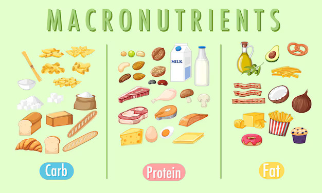
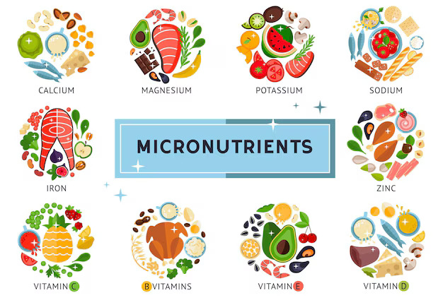
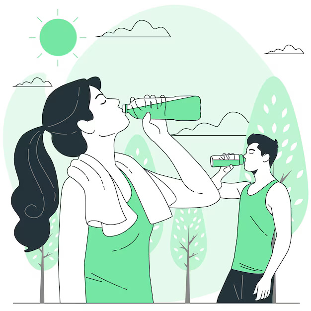
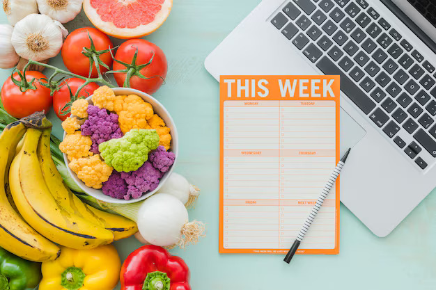
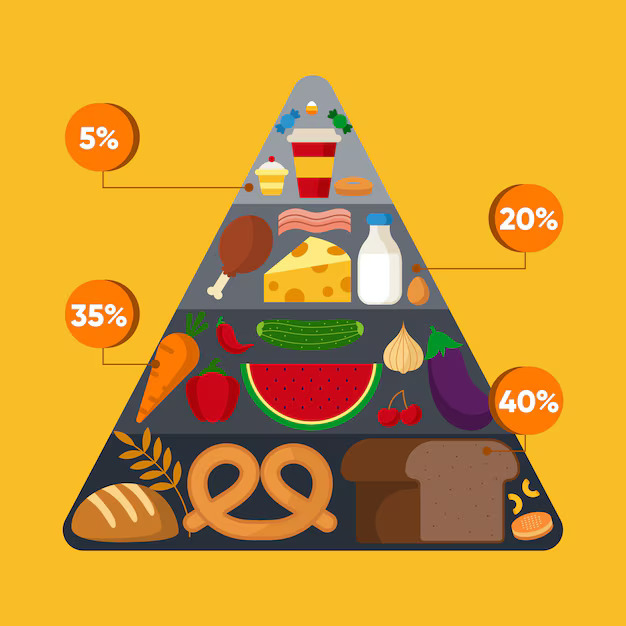

पोषण खेल प्रदर्शन को अनुकूलित करने में महत्वपूर्ण भूमिका निभाता है, जो सहनशक्ति, ताकत, रिकवरी और चोटों की रोकथाम को प्रभावित करता है। यहाँ एक विस्तृत मार्गदर्शिका है जो एथलीटों को उनके पोषण का अधिकतम लाभ उठाने में मदद करेगी:
- मैक्रोन्यूट्रीएंट्स

- कार्बोहाइड्रेट्स: कार्बोहाइड्रेट्स उच्च-तीव्रता वाले व्यायाम के लिए मुख्य ऊर्जा स्रोत होते हैं। ये मांसपेशियों और जिगर में ग्लाइकोजन के रूप में संग्रहीत होते हैं। जटिल कार्बोहाइड्रेट्स जैसे कि साबुत अनाज, फल, और सब्जियाँ खाने का लक्ष्य रखें। कार्बोहाइड्रेट्स को आपके कुल कैलोरी सेवन का 45-65% होना चाहिए। धीरज वाले एथलीट्स को अधिक कार्बोहाइड्रेट्स की जरूरत हो सकती है, जो अक्सर शरीर के वजन के प्रति किलोग्राम 7-10 ग्राम तक पहुंच सकती है।
- प्रोटीन: मांसपेशियों की मरम्मत और वृद्धि के लिए आवश्यक: प्रोटीन मांसपेशियों की मरम्मत और विकास के लिए आवश्यक होता है। सिफारिश की गई मात्रा शरीर के वजन के प्रति किलोग्राम 1.2-2.0 ग्राम होती है, जो खेल की प्रकार और तीव्रता के आधार पर बदल सकती है। अच्छे स्रोतों में शामिल हैं: दुबला मांस, डेयरी उत्पाद, दालें, और पौधों पर आधारित प्रोटीन जैसे टोफू और क्विनोआ।
- वसा : ऊर्जा के लिए आवश्यक वसा लंबे समय तक व्यायाम के दौरान ऊर्जा प्रदान करने और वसा में घुलनशील विटामिन्स के अवशोषण के लिए आवश्यक होते हैं। स्वस्थ वसा पर ध्यान दें जैसे एवोकाडो, नट्स, बीज, और जैतून का तेल। वसा को आपके कुल कैलोरी सेवन का लगभग 20-35% होना चाहिए।
- माइक्रोन्यूट्रीएंट्स

- आयरन :रक्त में ऑक्सीजन के परिवहन के लिए महत्वपूर्ण एथलीट्स, विशेष रूप से महिलाएं और वे लोग जो शाकाहारी आहार का पालन करते हैं, उन्हें पर्याप्त आयरन का सेवन सुनिश्चित करना चाहिए। अच्छे स्रोतों में लाल मांस, मुर्गी, दालें, और फोर्टिफाइड अनाज शामिल हैं।
- कैल्शियम और विटामिन D: हड्डियों के स्वास्थ्य के लिए महत्वपूर्ण कैल्शियम को डेयरी उत्पादों, हरी पत्तेदार सब्जियों, और फोर्टिफाइड नॉन-डेयरी दूध से प्राप्त किया जा सकता है। विटामिन D, जिसे धूप से प्राप्त किया जा सकता है, कैल्शियम के अवशोषण के लिए भी आवश्यक है; अगर आपकी धूप में कमी है, तो पूरक आहार पर विचार करें।
- एंटीऑक्सीडेंट्स: गहन व्यायाम से ऑक्सीडेटिव तनाव को कम करने में मदद करता है, विटामिन C और E, जो फल, सब्जियों, और नट्स में पाए जाते हैं, फायदेमंद हो सकते हैं।
- Hydration

- पानी: तरल संतुलन बनाए रखने और निर्जलीकरण से बचाने के लिए आवश्यक: पूरे दिन पानी पीते रहें और व्यायाम की अवधि और तीव्रता के आधार पर सेवन बढ़ाएं।
- इलेक्ट्रोलाइट्स: सोडियम, पोटेशियम, और मैग्नीशियम के माध्यम से खो जाते हैं। अगर गतिविधियाँ 60 मिनट से अधिक चलती हैं, तो इन आवश्यक खनिजों को पुनः प्राप्त करने के लिए स्पोर्ट्स ड्रिंक्स या इलेक्ट्रोलाइट सप्लीमेंट्स पर विचार करें।
- पोषण का समय

- व्यायाम से पहले: व्यायाम से 3-4 घंटे पहले कार्बोहाइड्रेट्स और प्रोटीन के साथ संतुलित भोजन करें। यदि आपको जल्दी ऊर्जा की जरूरत है, तो आसानी से पचने वाले कार्बोहाइड्रेट्स और थोड़े से प्रोटीन के साथ एक स्नैक चुनें, जैसे एक केला और एक चम्मच पीनट बटर।
- व्यायाम के दौरान: अगर गतिविधियाँ एक घंटे से अधिक चलती हैं, तो कार्बोहाइड्रेट्स (जैसे स्पोर्ट्स ड्रिंक्स या एनर्जी जेल) का सेवन ऊर्जा स्तर बनाए रखने में मदद कर सकता है।
- व्यायाम के बाद: रिकवरी पर ध्यान दें और ऐसा भोजन या स्नैक लें जिसमें प्रोटीन और कार्बोहाइड्रेट्स दोनों हों ताकि ग्लाइकोजन स्टोर्स को पुनः भरने और मांसपेशियों की मरम्मत में मदद मिल सके। आमतौर पर 3:1 का अनुपात (कार्बोहाइड्रेट्स के मुकाबले प्रोटीन) सिफारिश की जाती है।
- विशेष विचार

- भोजन की संख्या: छोटे और बार-बार भोजन करने से ऊर्जा स्तर बनाए रखने और मेटाबोलिज़्म को समर्थन मिलता है। यह तरीका प्रशिक्षण के दौरान पाचन संबंधी असुविधा से बचने में भी मदद करता है।
- व्यक्तिगत जरूरतें:पोषण की जरूरतें खेल, प्रशिक्षण की तीव्रता, और व्यक्तिगत मेटाबोलिज़्म के आधार पर भिन्न हो सकती हैं। एक खेल पोषण विशेषज्ञ की सहायता से तैयार की गई व्यक्तिगत योजना विशेष रूप से फायदेमंद हो सकती है।
- आम गलतियों से बचाव: अधिक पूरक आहार, स्पोर्ट्स ड्रिंक्स पर अधिक निर्भरता, या अत्यधिक डाइटिंग से सावधान रहें। तेजी से उपायों के बजाय संतुलित आहार पर ध्यान दें।
- सामान्य सुझाव
- खाद्य पदार्थों की गुणवत्ता: अधिकतम पोषक घनत्व और समग्र स्वास्थ्य के लिए संपूर्ण और न्यूनतम संसाधित खाद्य पदार्थों को प्राथमिकता दें।
- अपने शरीर की सुनें: विभिन्न खाद्य पदार्थों और उनके समय का आपके प्रदर्शन और रिकवरी पर क्या प्रभाव पड़ता है, इस पर ध्यान दें। व्यक्तिगत अनुभव और अपने शरीर से प्राप्त फीडबैक के आधार पर अपने आहार में बदलाव करें।
- संगति और संतुलन: एक संतुलित और लगातार पोषण दृष्टिकोण कभी-कभार किए गए परिवर्तनों से अधिक प्रभावी होता है। सुनिश्चित करें कि आपका आहार केवल तत्काल प्रदर्शन लक्ष्यों को नहीं, बल्कि समग्र स्वास्थ्य को समर्थन करता है।
इन पोषण संबंधी टिप्स को अपने प्रशिक्षण कार्यक्रम में शामिल करके, आप अपनी खेल प्रदर्शन को बेहतर बना सकते हैं, रिकवरी को समर्थन दे सकते हैं, और अपनी फिटनेस लक्ष्यों को अधिक प्रभावी ढंग से प्राप्त कर सकते हैं।